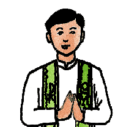

A Pároquia Nossa Senhora de Lourdes se localiza no Distrito de Antonio Diogo, Redenção - Ce,
foi
inaugurada em 2010.
Hoje é composta por 11 comunidades e a sede da Paróquia.
Também
conta
com
vários movimentos e pastorais.
Atualmente tem como pároco, o Padre Antonio Alves.

Paróquia
Nossa Senhora
de Lourdes
